Kea App
Link til githubBrugerreseach
Data-mining:
Under spørgsmålet "Hvad mangler du på KEA?" er der 2 svar der bliver gentaget:
- En app til fronter/bedre fronter
- Billigere/bedre kantine
Koding af data:
- Kantine
- Billigere kantine
- Bedre kantinemad
- Fronter
- En fronter app
- Forbedring af fronter hjemmeside
- Bedre skema ordning
Identifikation af indsigter:
Eleverne på kea er trætte af den dyre kantine, og vil derfor heller købe deres mad i lidl,
da de ikke har råt til kantinemaden.
Eleverne på KEA vil gerne have en app til Fronter, som gør
det let, tjekke skemaet og diverse andre ting.
Problemformulering
Multimediedesignstuderende på den danske og den internationale linje har ikke meget med hinanden at gøre, det vil KEA gerne gøre noget ved. Men hvordan kan en KEA app understøtte dette? KEA app’en må også gerne forbedre de studerendes muligheder for at få et arbejde efter endt uddannelse.
De studerende på multimediedesignuddannelsen har intet med hinanden at gøre på tværs af sprogene.
Hvorfor snakker de studerende ikke med hinanden på tværs?
Hvis de havde en fælles studie app ville de så komme i kontakt med hinanden oftere?
Persona
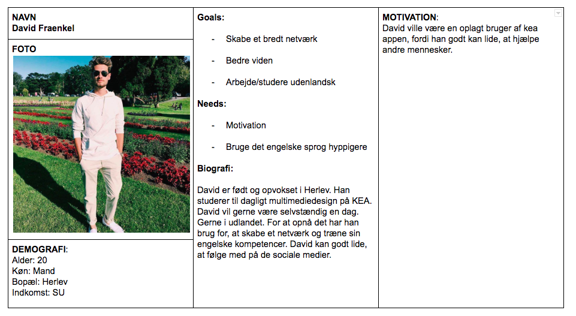Storyboard
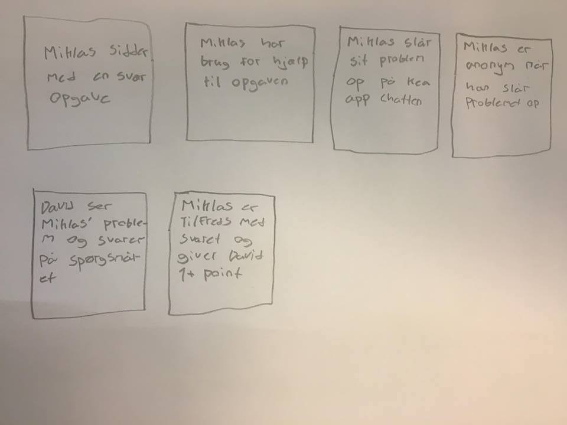Features og funktionaliteter
- Skrive tekst
- Anononym eller Username
- Rate andres svar
- Skrive svar
- Stille spørgsmål
- Uploade filer til dit spørgsmål/svar
Design Charette
Vores udgangspunkt
Hvordan kan man lave en app, som gør det muligt for studerende at hjælpe hinanden med studierne - med opgaveløsninger
Vi skiterede alle de ideer vi fik ned på papir i 10 min, hvorefter vi picthede 5 af ideerne, og gik videre med den ide, som fik flest stemmer.
Efter det skiterede vi flere ideer, udfra forrige idé i par af 2-3 personer. Vi kom frem til en idé, som gik ud på en lektiehjælp app, som kunne bringe de internationale og danske multimediedesignstuderende tættere sammen. Et forum hvor studerende kan stille spørgsmål, og andre kan svare på. Forskellen fra vores idé og andres var, at man kan stille spørgsmålet anonymt, hvilket vil gøre, at flere vil stille spørgsmål.
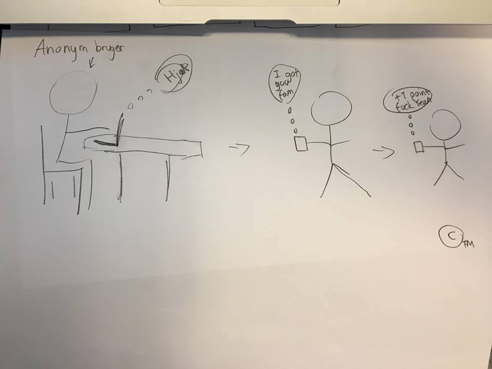Paper Prototype
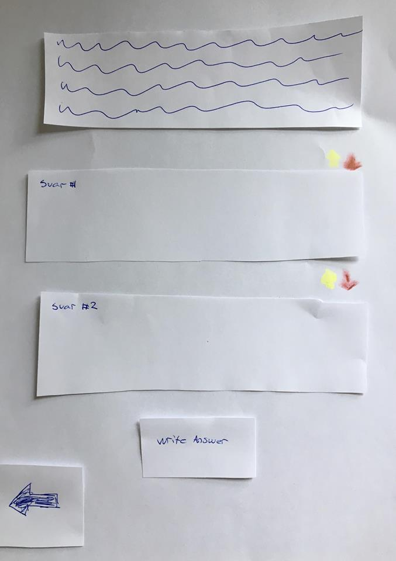XD Prototype
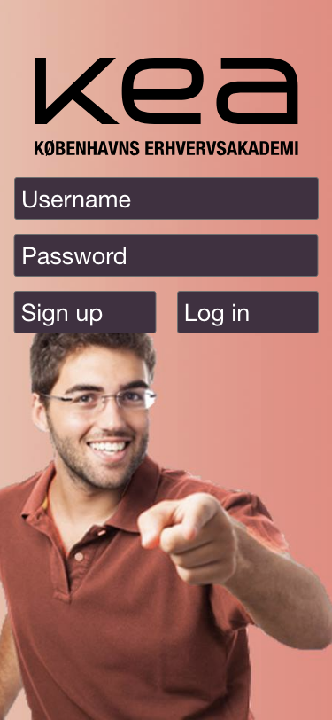 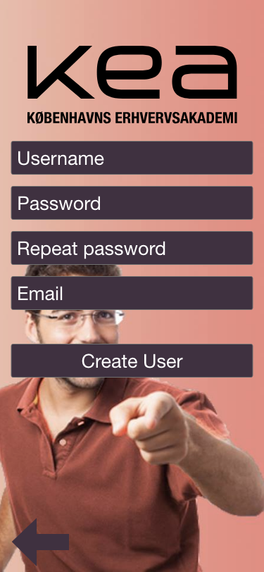 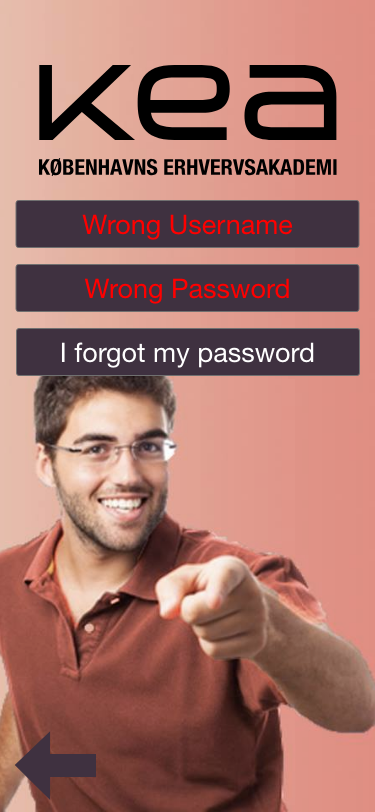 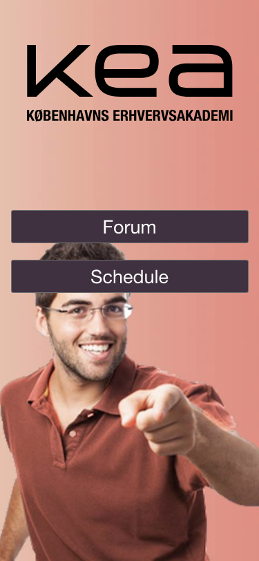 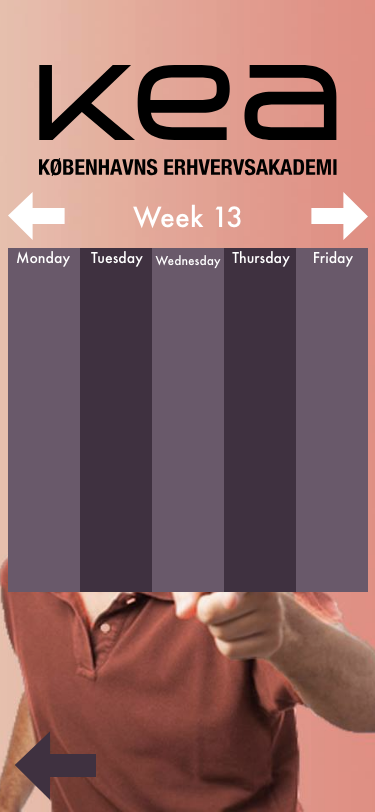 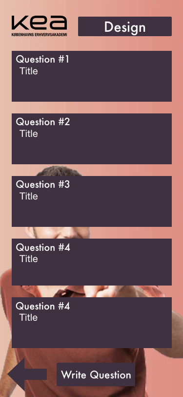 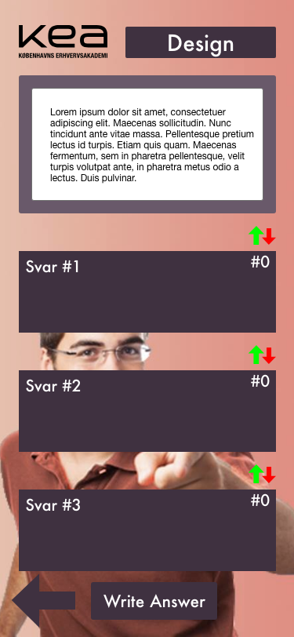
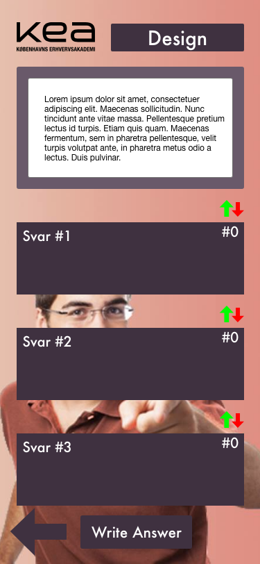